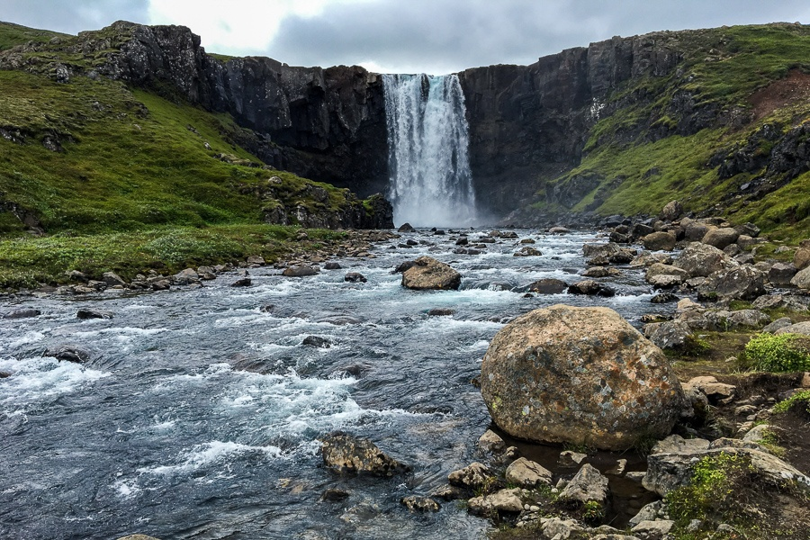
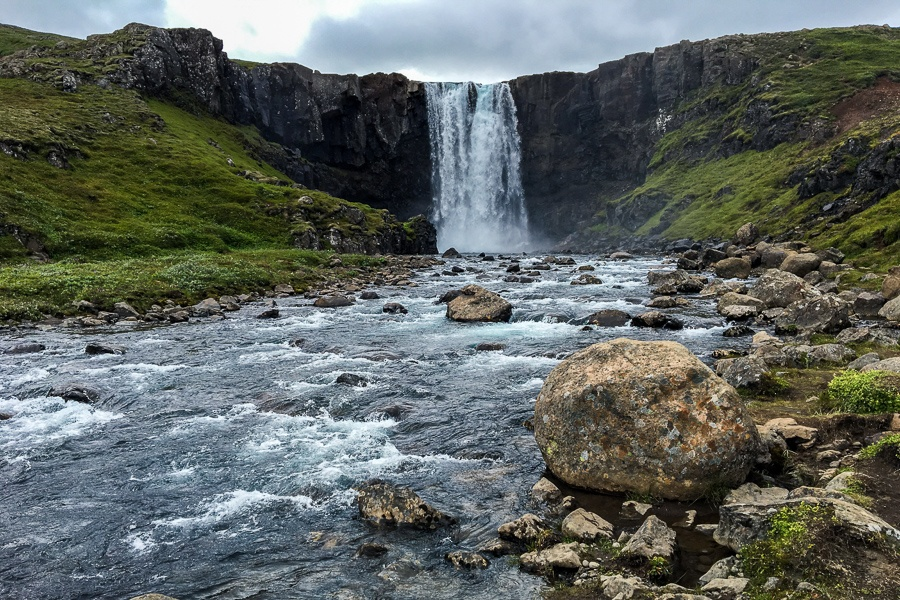
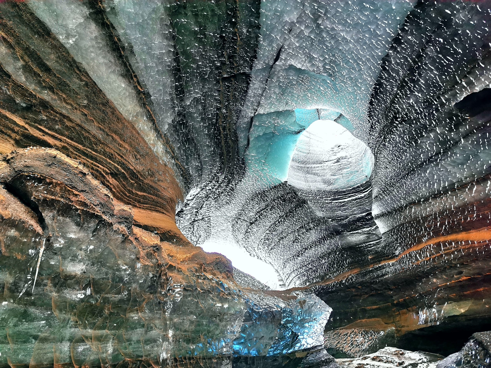
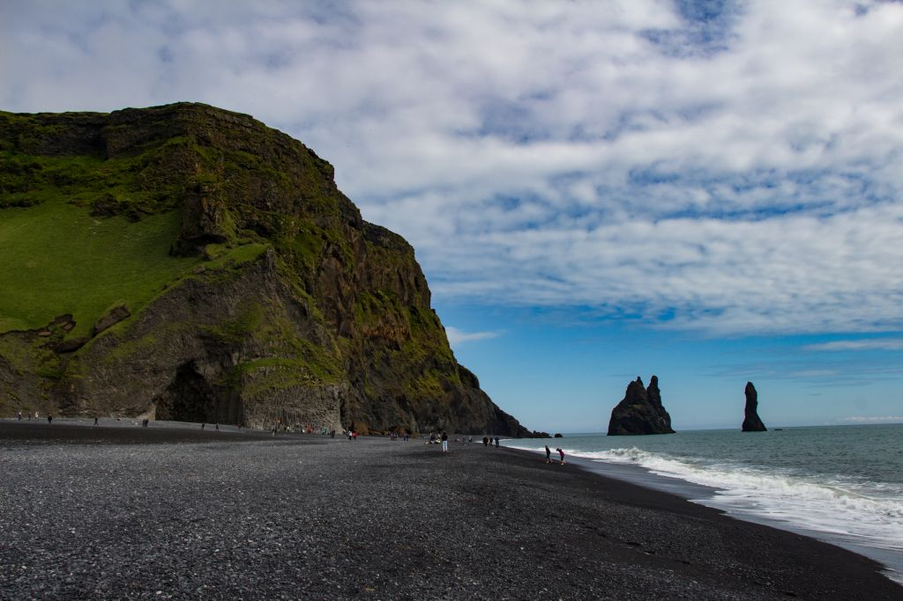
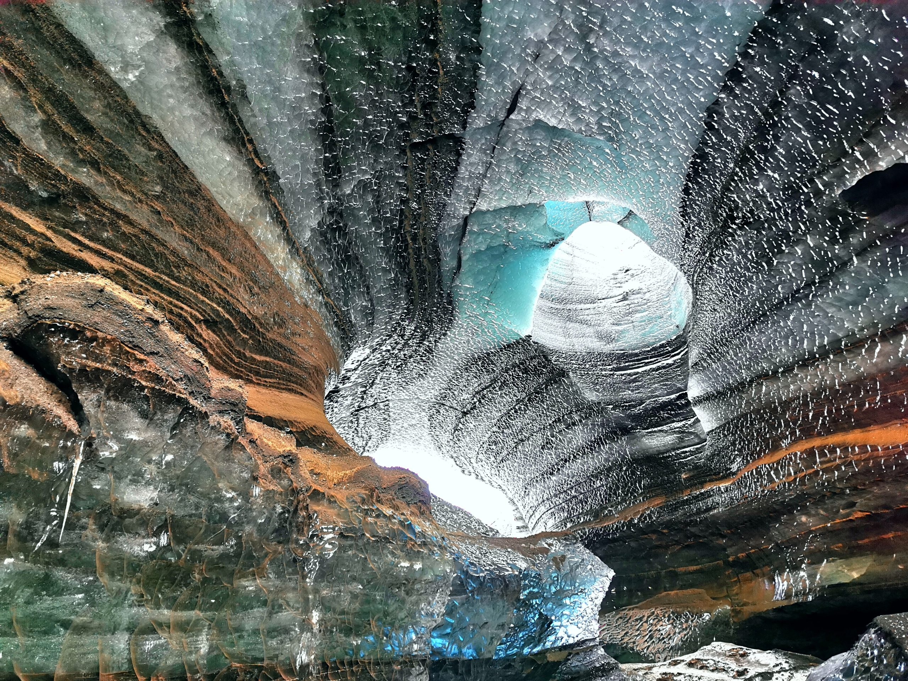
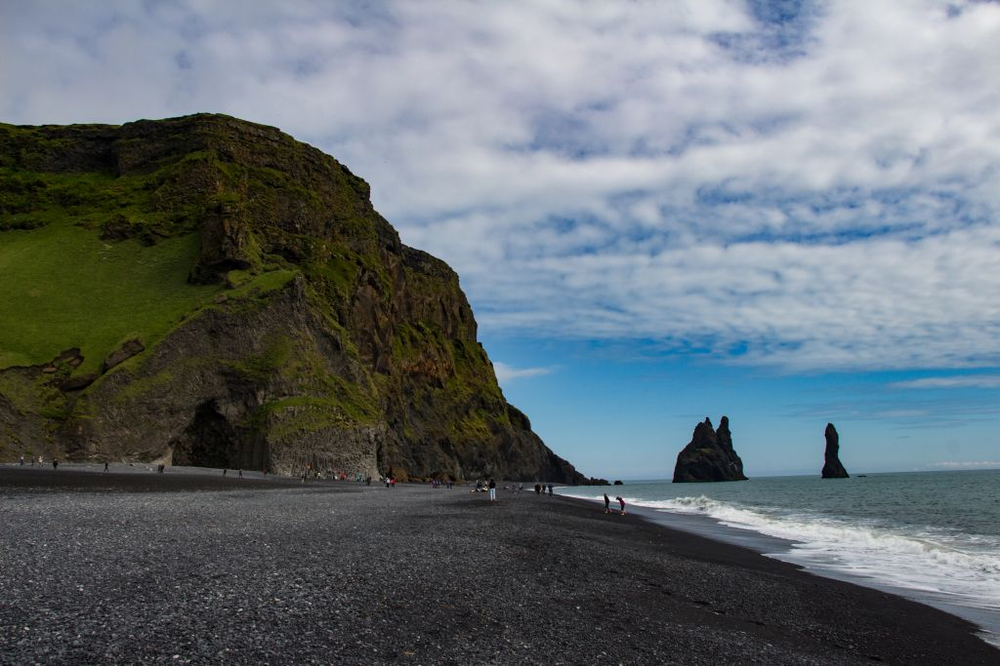

SEYDISFJORDUR
The Church in Seyðisfjörður is one of the most recognisable landmarks in Iceland. With its distinct colour and buildingstyle it has become a popular spot for tourists. The church used to stand at Dvergasteinn farm and in 1882 it was moved to Vestdalseyri. At first the church stood on a hill overlooking Vestdalseyri but in 1894 it was blown over and damaged by a huge storm. The church was rebuilt, this time down on the peninsula and stood there until 1920 when the decision was made to move to its present location in the heart of Seyðisfjörður. In 1989 the the Blue Church was damaged by fire when renovation work was being carried out on the building and a pipe organ that was installed in 1987 was ruined by the flames. Today the Blue Church has a pipe organ of the same type as the one that was lost to the fire.
Gufufoss is a waterfall in the Eastern fjords of Iceland. It is one of many waterfalls in the river Fjarðará and is derived from the mist that often accompanies the area. The origin of the river lies at the Fjarðarheiði plateau, between Seyðisfjörður and Egilsstaðir. Road 93 runs over the plateau and runs up to an altitude of more then 600 meters with beautiful views and in summertime still a lot of snow. The waterfall is located near the village of Seyðisfjörður in de river Fjarðará (Fjord River) River, along road 93. Seyðisfjörður on the East coast is Iceland’s most important harbour, all the ferries from Continental Europe arrive here.
 

VIK
Reynisdrangar are basalt sea stacks situated under the mountain Reynisfjall near the village Vík í Mýrdal in southern Iceland. It is framed by a black sand beach that was ranked in 1991 as one of the ten most beautiful non-tropical beaches in the world. In 2021 Reynisfjara was rated the 6th best beach in the world.
The ice cave is located at Kötlujökull Glacier, which is an outlet of Mýrdalsjökull Glacier. Underneath awaits the mighty Katla volcano, that names both the glacier and the ice cave. Visit the cave of “Dragon Glass”, known from the famous TV Show Game of Thrones, accessible all year around. Witness the formation of an Ice Cave, while you’ll learn all about glaciers, ice caves and the natural phenomena of ice calving. View of the Ice Cave is truly spectacular. The color combination of the ice is hard to believe.
 



HUSAVIK
Husavik is a charming little village in the central North of Iceland, known for its incredible whale watching and geothermal baths. Iceland has particularly good whale watching – you can see humpbacks, orcas, blue whales, and more. Visit the Whale Museum at Húsavík before going on a whale-watching tour. It is right by the harbour and there you can find everything you ever wanted to know about whales.The best time for whale watching in Iceland is from April to late September-early October, with June, July and August recognized as the peak season.
In the north of Iceland, three beautiful pools cling to the cliffs above the Skjálfandi bay. In the ocean below, a few whales or dolphins splashed in the water. Sit in the hot water and stare at the snow-capped Kinnarfjöll mountains in the distance, you'll experience the remarkable contrast that is Iceland: fire and ice. These are the GeoSea Geothermal Sea Baths, the most beautiful hot springs in the world. Of all the geothermal pools in Iceland, the GeoSea Baths is the absolute best. They are unique in their use of saltwater and unparalleled in their beauty. The idyllic location and the thoughtfulness of the design make this geothermal pool perfection.